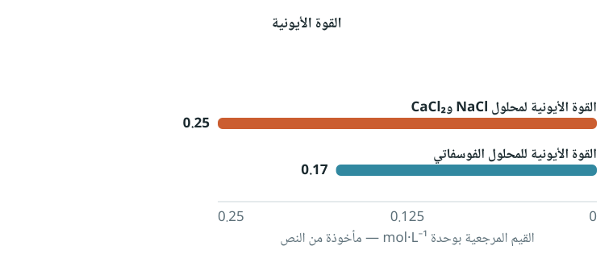

القوة الأيونية
Ionic strength
القوة الأيونية تقيس تركيز الأيونات في محلول مع مراعاة شحنتها: I = ½Σc_i·z_i². تحدد انحراف المحلول عن السلوك المثالي، وتُستعمل في معادلة ديباي-هوكل لحساب معاملات الفعالية وفي ضبط المحاليل المنظمة.
المحلول الذي يحوي أيونات لا يتصرف تصرفاً مثالياً، لأن كل أيون يحيط به غلاف من الأيونات المعاكسة الشحنة يُضعف فعاليته. وقوة هذا الغلاف لا تعتمد على عدد الأيونات فقط بل على شحنتها أيضاً، لأن الأيون ثنائي الشحنة يجذب غلافاً أقوى بأربعة أمثال. ولهذا تُعرَّف القوة الأيونية: I = ½Σc_i·z_i²، حيث c_i تركيز الأيون بالمولارية وz_i شحنته. مثال: محلول يحوي 0.100 mol/L من NaCl و0.0500 mol/L من CaCl₂: I = ½(0.100×1² + 0.100×1² + 0.0500×2² + 0.100×1²) = ½(0.100+0.100+0.200+0.100) = 0.250 mol/L.
كيف تعمل الظاهرة؟
في المحلول، يحيط بكل أيون غلاف أيوني من الأيونات المعاكسة الشحنة. وهذا الغلاف يقلل الشحنة الفعالة للأيون، فيقل تفاعله مع غيره. وقوة الغلاف تتناسب مع تركيز الأيونات ومع مربع شحنتها، لأن الأيون ثنائي الشحنة يجذب ضعف العدد بقوة مضاعفة، أي أربعة أمثال. ولهذا يقل معامل الفعالية بانخفاض القوة الأيونية، ويقترب من الواحد في المحاليل المخففة جداً. وهذا يفسر لماذا تختلف ثوابت التوازن المقاسة عند قوة أيونية مختلفة.
العلاقة بالأرقام
I = ½Σc_i·z_i²، ومعادلة ديباي-هوكل الممتدة: log γ = −0.509·z²·√I/(1+√I). مثال: محلول I = 0.250 mol/L، أيون أحادي الشحنة: log γ = −0.509×1×0.500/(1+0.500) = −0.170، فيكون γ = 0.677. وأيون ثنائي الشحنة في المحلول نفسه: log γ = −0.509×4×0.500/1.500 = −0.679، فيكون γ = 0.209، أي أقل بثلاثة أمثال.
مفاهيم متقاربة
يُفرَّق بين القوة الأيونية والتركيز المولي: محلول 0.100 mol/L من NaCl و0.100 mol/L من CaCl₂ لهما التركيز نفسه لكن قوة أيونية مختلفة. ويُفرَّق بين القوة الأيونية والمولالية الأيونية: الثانية مجموع المولالات بلا وزن شحنة. ويُفرَّد بين معامل الفعالية والفعالية: الأول نسبة، والثانية تركيز فعلي. وأخيراً يُفرَّق بين القوة الأيونية المحسوبة والمقاسة: الثانية تُستخرج من ضغط البخار أو من خلايا التركيز.
حدود التطبيق
معادلة ديباي-هوكل صالحة حتى قوة أيونية نحو 0.1 mol/L، وفوقها يلزم نموذج ممتد أو معاملات تجريبية. ولا تصف المحاليل التي فيها تجمّع أيوني قوي أو أزواج أيونية. ولا تصلح للمحاليل غير المائية أو المختلطة، حيث يختلف ثابت العزل. ولا تُستعمل في حساب الأنشطة في المحاليل المركّزة كالمواد الحمضية الصناعية.

| الكمية | القيمة | المصدر |
|---|---|---|
| القوة الأيونية لمحلول NaCl وCaCl₂ | 0.250 mol·L⁻¹ | [1] |
| القوة الأيونية للمحلول الفوسفاتي | 0.172 mol·L⁻¹ | [1] |
| عدد أفوجادرو N_A | 6.022 140 76×10²³ mol⁻¹ | [1] |
المصادر
- 1 CODATA Value: Avogadro constant — NIST — CODATA 2022 recommended values (2024). physics.nist.gov/cgi-bin/cuu/Value?na · اطُّلع عليه 2026-11-22
- 2 CODATA Value: elementary charge — NIST — CODATA 2022 recommended values (2024). physics.nist.gov/cgi-bin/cuu/Value?e · اطُّلع عليه 2026-11-22
- 3 CODATA Value: molar gas constant — NIST — CODATA 2022 recommended values (2024). physics.nist.gov/cgi-bin/cuu/Value?r · اطُّلع عليه 2026-11-22
استشهد بهذا المصطلح
الصيغتان مبنيتان من بيانات الصفحة نفسها: العنوان والتاريخ ورابط النسخة المنشورة.
القوة الأيونية — Ionic strength. (2026). ديوان المعرفة — انفراد. https://infiradev.com/diwan/terms/term-ionic-strength.html
@misc{term-ionic-strength2026,
title = {القوة الأيونية},
titleaddon = {Ionic strength},
howpublished = {{ديوان المعرفة — انفراد} — مرجع علمي عربي},
year = {2026},
url = {https://infiradev.com/diwan/terms/term-ionic-strength.html},
urldate = {2026-11-26},
note = {مراجعة علمية: hermes (مراجعة معتمدة 2026-11-26)}
}
راجعه: hermes (مراجعة معتمدة 2026-11-26) · 2026-11-26 · آخر تحديث 2026-11-22